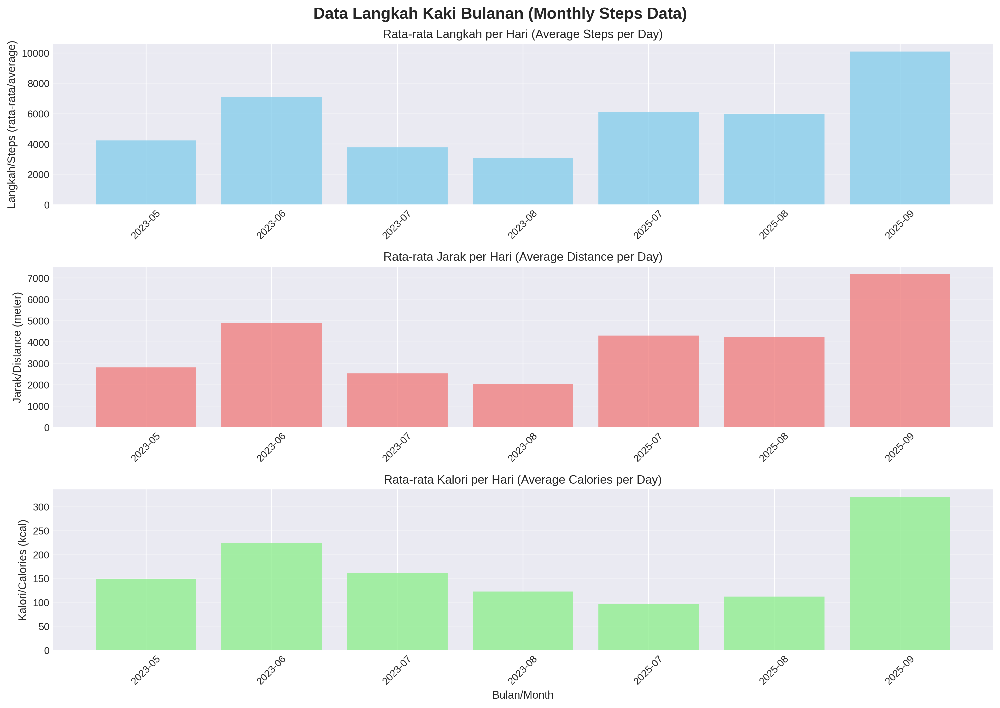
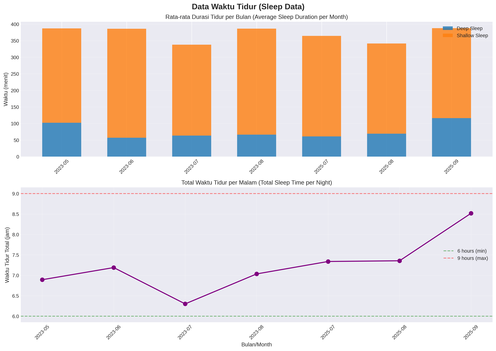
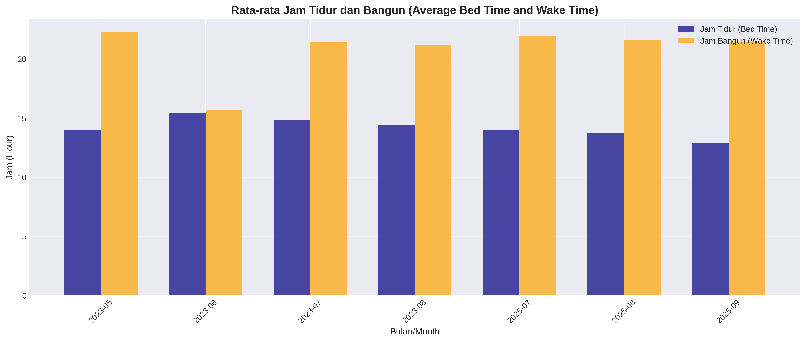
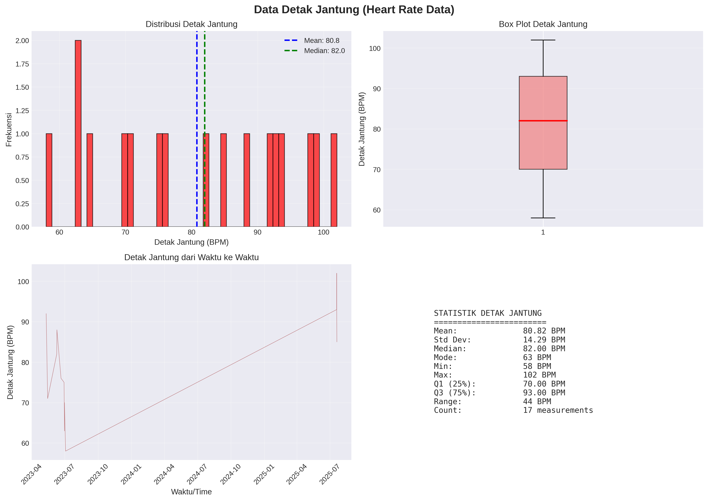

📈 Ringkasan Data
Total Hari Aktif
130
hari
Rata-rata Langkah
4,819
langkah/hari
Total Malam Tidur
110
malam
Rata-rata Tidur
6.4
jam/malam
🚶 Data Langkah Kaki (Activity)

Statistik Bulanan Langkah Kaki
Statistik Bulanan
| Bulan | Langkah (rata-rata) | Jarak (meter) | Kalori (kcal) |
|---|---|---|---|
| 2023-05 | 3,624 | 2,407 | 128 |
| 2023-06 | 7,067 | 4,879 | 225 |
| 2023-07 | 3,648 | 2,445 | 156 |
| 2023-08 | 2,779 | 1,832 | 112 |
| 2025-07 | 6,091 | 4,293 | 97 |
| 2025-08 | 5,247 | 3,716 | 98 |
| 2025-09 | 5,276 | 3,739 | 170 |
💡 Temuan Utama:
- Bulan terbaik: Juni 2023 dengan rata-rata 7,067 langkah/hari
- Bulan terendah: Agustus 2023 dengan rata-rata 2,779 langkah/hari
- Target WHO: 8,000 langkah/hari belum tercapai secara konsisten
- Trend: Aktivitas fisik menunjukkan variasi musiman
😴 Data Waktu Tidur (Sleep)

Durasi Tidur Bulanan

Waktu Tidur dan Bangun
Statistik Tidur Bulanan
| Bulan | Deep Sleep (min) | Shallow Sleep (min) | Total (jam) | Bed Time | Wake Time |
|---|---|---|---|---|---|
| 2023-05 | 102 | 285 | 6.9 | 14:01 | 22:17 |
| 2023-06 | 52 | 300 | 6.5 | 15:54 | 14:46 |
| 2023-07 | 58 | 256 | 5.9 | 14:57 | 21:10 |
| 2023-08 | 64 | 313 | 6.9 | 14:29 | 21:06 |
| 2025-07 | 61 | 303 | 7.3 | 13:59 | 21:56 |
| 2025-08 | 46 | 217 | 5.5 | 14:28 | 20:26 |
| 2025-09 | 77 | 207 | 6.1 | 15:55 | 22:03 |
💡 Temuan Utama:
- Durasi tidur: Berkisar antara 5.5 - 7.3 jam per malam
- Target tidur: Mayoritas malam memenuhi target 6-9 jam
- Deep sleep: Perlu ditingkatkan untuk kualitas tidur yang lebih baik
- Konsistensi: Waktu tidur dan bangun cukup stabil
❤️ Data Detak Jantung (Heart Rate)

Analisis Detak Jantung
Statistik Detak Jantung
| Statistik | Nilai |
|---|---|
| Mean (Rata-rata) | 80.82 BPM |
| Standard Deviation | 14.29 BPM |
| Median | 82 BPM |
| Mode | 63 BPM |
| Minimum | 58 BPM |
| Maximum | 102 BPM |
| Q1 (25%) | 70 BPM |
| Q3 (75%) | 93 BPM |
💡 Temuan Utama:
- Status: Detak jantung dalam rentang normal (60-100 BPM saat istirahat)
- Variasi: Variasi detak jantung menunjukkan beragam tingkat aktivitas
- Rata-rata: 80.82 BPM menunjukkan kondisi kardiovaskular yang sehat
- Range: 58-102 BPM menunjukkan tidak ada anomali signifikan
💡 Rekomendasi
🚶 Aktivitas Fisik
- Tingkatkan konsistensi untuk mencapai minimal 8,000 langkah per hari
- Pertahankan momentum bulan Juni 2023 yang menunjukkan performa terbaik
- Jadwalkan aktivitas rutin seperti jalan pagi atau sore hari
- Gunakan tangga lebih sering untuk menambah jumlah langkah
😴 Kualitas Tidur
- Pertahankan durasi tidur 6-9 jam per malam
- Tingkatkan kualitas deep sleep dengan mengurangi gangguan sebelum tidur
- Hindari penggunaan gadget 1 jam sebelum tidur
- Jaga konsistensi waktu tidur dan bangun
- Ciptakan lingkungan tidur yang nyaman (gelap, sejuk, tenang)
❤️ Kesehatan Jantung
- Lanjutkan monitoring detak jantung secara rutin
- Perhatikan perubahan signifikan dalam pola detak jantung
- Kombinasikan aktivitas kardio dengan latihan kekuatan
- Konsultasi dengan dokter jika ada perubahan drastis
🔬 Metodologi
Data Processing
- Device: Amazfit Band 3
- Export: Zepp App CSV format
- Analysis Tool: Python 3 (pandas, matplotlib, seaborn)
- Time Zone: UTC+0000
- Data Cleaning:
- Hari dengan langkah = 0 dianggap tidak valid (excluded)
- Malam dengan tidur = 0 dianggap tidak valid (excluded)
- Detak jantung di luar 40-200 BPM dianggap outlier (excluded)
🔗 Referensi
- Inspirasi: Blog Post - Data Jalan Kaki, Tidur, dan Detak Jantung
- WHO Guidelines: Physical Activity Recommendations
- Sleep Foundation: Sleep Duration Recommendations